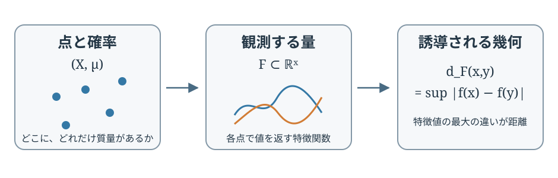

幾何学的データ集合の幾何 I
この論文で見たいこと
データを点の集まりとして見るだけでなく、「各点で何を測るか」まで含めて幾何を作ると、どんな空間が現れるのか。この論文は、幾何学的データ集合（geometric data set、以下GDS）に二つの距離を定め、その空間の集まりがどんな位相的性質をもつかを調べる。
主結果は二つある。観測距離で見ると、GDS全体は可分ではない。一方、ボックス距離で見ると、やはり可分ではないが、完備になる。二つの結論は、GDSでは点の距離だけでなく、特徴関数の集まりそのものも幾何の一部として動くことを示している。
この解説では、まず既存のmm-spaceとデータ解析の文脈を分けて紹介し、そのあと定義、具体例、定理、証明の道筋を順にたどる。証明の要所は折りたたみ部分に入れてある。

先行研究：距離と測度をもつ空間から、観測量をもつデータへ
mm-spaceで比べるもの
測度距離空間（metric measure space、mm-space）は、完備可分距離空間 と、その上のボレル確率測度 を組にしたものだ。距離は点同士の近さを表し、測度は空間のどこに確率質量があるかを表す。幾何学的には、図形の形と、その上の「重み」を一緒に扱う枠組みだ。
Gromovの測度距離幾何では、mm-space同士を比べる代表的な距離として、観測距離とボックス距離が現れる。観測距離は、空間から実数への1-Lipschitz関数を観測者とみなし、測度の大部分で観測結果が近いかを測る。ボックス距離は、二つの空間の点を確率的に対応させ、その大部分で距離構造がよく合うかを見る。Shioyaの本は、この理論の背景と収束・集中の考え方を学ぶためのまとまった入口になっている。[Gromovの本][Shioyaの本]
mm-spaceをデータに使う発想では、Pestovが観測可能直径と測度集中を通して次元の呪いを捉えた。Hanika・Schneider・Stummeは、アルゴリズムが実際に使う特徴量のクラスを取り込んだ幾何学的データ集合を導入し、内在次元を研究した。ここでの出発点は、すべての1-Lipschitz関数を使うのではなく、データ解析で選ばれた特徴関数だけで空間を測ることにある。[Pestov][Hanika–Schneider–Stumme]
一方、Nakajimaはmm-spaceの観測距離とボックス距離を、二つの確率測度を結ぶカップリングを使って特徴づけた。この「まず二つの空間を同じ確率空間上で対応させ、その上で関数や距離を比べる」という見方は、本論文の距離の定義と証明の重要な足場になる。[Nakajima]
この論文で新たに問うこと
先行研究ではGDSを使った統計量や内在次元が扱われていたが、GDS全体に入る観測距離の位相的性質は十分に調べられていなかった。また、mm-space上のボックス距離には標準的な定義がある一方、特徴関数のクラス自体がデータの一部であるGDSに対して、同じ役割を担う距離を定義する必要があった。
この論文の新しい結果は、その二点を埋める。
- GDS全体の観測距離は可分でない。
- 特徴関数を比較するボックス距離をGDS全体に定義でき、その距離は完備だが可分でない。
観測距離の非可分性は、後で見る一点空間の例から直ちに分かる。ボックス距離の非可分性は、観測距離がボックス距離以下になるという評価から従う。したがって、証明上の大仕事はボックス距離の完備性だ。
定義：特徴関数が距離を作る
まず、集合 上の実数値関数をいくつか集めた族 を考える。各関数 は、点 で測る一つの特徴量と思えばよい。二点 の距離を、すべての特徴量の変化のうち最も大きいものとして
と定める。この上限が任意の二点で有限であり、 が距離の公理を満たすとき、 を特徴空間と呼ぶ。確率測度 も加えて がmm-spaceになるとき、三つ組 をGDSと呼ぶ。
この定義には二つの層がある。
- と は、点の空間とデータの分布を表す。
- は、どの観測量を重要なものとして採用するかを表す。
そして は距離も決める。特徴量のどれか一つでも大きく違えば、二点間の距離も大きくなる。特徴関数の選び方は、空間に後付けする情報ではなく、空間そのものの幾何を指定している。
mm-spaceはGDSの特別な場合
距離空間 上の1-Lipschitz関数全体を と書く。各 について
だから、これらの関数が作る距離 は 以下だ。逆向きには、固定した に対して とおけば、三角不等式から は1-Lipschitzで、 となる。よって
つまり、mm-spaceは「許される観測量を、すべての1-Lipschitz関数にしたGDS」と見なせる。GDSは、そこから特徴量を選び直すことで、用途に合わせて幾何を変える枠組みだ。
具体例：一点しかなくても、観測できる情報は違う
一点集合 にディラック確率測度 を置く。各実数 に対して、唯一の点で値 をとる定数関数 を考える。実数の集合 から特徴族 を作れば、 はGDSになる。点が一つなので、誘導される点間距離は常に0だ。
ところが、 が違えば「観測される特徴値の集まり」は違う。例えば と では、基礎となるmm-spaceはどちらも同じ一点空間だが、使う観測量は異なる。この違いはGDSの同型では消えない。GDSは点の距離と確率分布だけでなく、特徴関数の族を記憶する。
さらに、空でない 全体を動かすと、観測距離で互いに距離1だけ離れたGDSが非可算個できる。可分距離空間では、互いに一定距離以上離れた点は高々可算個しかない。したがってGDS全体の観測距離は可分でない。これが定理1.1の核心で、複雑な空間を作らず、一点空間だけで非可分性が見える。
いつ二つのGDSを同じものとみなすか
定理で距離を入れる対象は、表示の仕方が違うだけのGDSを同一視した集合 だ。論文では、測度を保つボレル写像 が存在し、 の特徴族を に引き戻したものが の特徴族と一致するとき、二つのGDSを同型とする。ここでは特徴族の点wise極限（同値な収束 in measure の極限）も含めて比べる。
また、 が を支配するとは、測度を保つ写像 があり、 の特徴量を で引き戻すと の特徴族の閉包に含まれることをいう。方向としては、 が持つ観測情報から の観測情報が作れる、という関係だ。特徴族の一部 だけを残したいときは、 と書く商GDSを作る。概念的には、 の関数では見分けられない点を同一視する。完備性の証明では、極限の特徴族 による商 を極限候補にする。
観測距離：確率の大部分で特徴量をそろえる
二つのGDS と を比べよう。共通の確率空間から と へ写す写像 と を取り、それぞれ と を押し出すものとする。このような写像を確率測度のパラメータと呼ぶ。
パラメータを固定すると、特徴関数 は となり、 は となる。これらの実数値関数を、確率の大部分でどれだけ近づけられるかを測るのがKy Fan距離だ。確率測度 上の二つの可測関数 に対して
と定める。関数値の差が を超える点の確率が 以下なら、二つの関数は 以内で近いと見る。関数族同士は、片方の各関数がもう片方の近くにあり、逆方向にも同じことが成り立つかをHausdorff距離で比較する。
観測距離 は、そのHausdorff距離をパラメータの選び方について最小化したものだ。直感的には、二つのデータが少し違う点集合を持っていても、確率質量の大部分を対応づけたとき、使える観測量の出力がほぼ一致するなら近い、と考える。
より正確には
と書ける。 は、Ky Fan距離を使った関数族のHausdorff距離で、 と はそれぞれの測度を押し出すパラメータだ。
ここで一点空間の例に戻ると、パラメータの選択には自由がない。定数関数の値が異なる特徴族は、Ky Fan距離で離れる。整数値の候補を別々の部分集合に分けたものは互いに距離1になるため、非可分な集合が現れる。
ボックス距離：よく対応する部分で特徴族を比べる
mm-spaceに対する従来のボックス距離では、二空間を結ぶカップリング と、その上の閉集合 を選ぶ。 は「点どうしの対応がよくできている部分」と考える。距離が の上でどれだけずれるかを歪みとして測り、 の外に残る確率質量 と、距離の歪みの大きい方を誤差とする。
カップリングとは、 上の確率測度 で、第一成分への射影が 、第二成分への射影が となるものだ。言い換えると、二つの分布を保ちながら、点を確率的に組にする方法である。
GDSでは、点の距離だけではなく、特徴族そのものを比べる。 の上で関数 と の差を測るため
を使う。関数族 のHausdorff距離は、
である。ここで と は積空間の第一・第二成分への射影だ。論文の定義は
第一項は、うまく対応できなかった確率質量。第二項は、うまく対応できた部分上でも特徴関数が食い違う大きさだ。カップリングと閉集合の選び方を最適化することで、二つのデータ集合の「ほとんどすべての点で、ほとんどすべての観測量がそろう」度合いを測る。
係数2は飾りではない。mm-spaceを全1-Lipschitz関数のGDSとして見た場合、特徴族のHausdorff距離の2倍が、従来の距離歪みと一致する。これにより、新しい定義はmm-space上の通常のボックス距離を正確に再現する。
定理の意味
定理1.1：観測距離は可分でない
一点GDS を、すべての部分集合 に対して作る。 なら、片方にだけ現れる整数の特徴値がある。整数は1以上離れており、Ky Fan距離は1を上限とするので、二つの特徴族のHausdorff距離はちょうど1になる。したがって、非可算個のGDSが互いに距離1離れて並ぶ。
可分性は「可算個の点で、空間全体をいくらでも細かく近似できる」という性質だ。互いに距離1離れた点を非可算個含む空間には、どんな可算稠密集合も作れない。これが定理1.1の内容だ。
定義1.3・定理1.4：ボックス距離は完備だが可分でない
定義1.3は、mm-spaceのボックス距離をGDSに拡張したものだ。そして定理1.4は、得られる距離空間 が完備である一方、可分ではないと述べる。
「完備」は、距離に関するCauchy列が、GDSの範囲から出ずに極限を持つこと。「可分でない」は、全体を近似する可算な標本を取れないこと。したがって、この結果は「極限操作はできるが、空間全体を可算な近似対象に置き換えることはできない」と読むとよい。mm-spaceのクラスではボックス距離が完備かつ可分なので、この非可分性はGDSが特徴族を自由に持つことから生じる。
また、観測距離はボックス距離以下、すなわち である。もしボックス距離が可分なら、それより弱い観測距離も可分になるはずだが、定理1.1に反する。これでボックス距離の非可分性も分かる。完備性とは別に、非可分性には短い道筋がある。
証明の核心
ここでは定理1.4のうち、完備性の証明を順にたどる。全文は論文の定理5.22の証明と補助補題5.15–5.21にある。
まず極限を作るための共通の確率空間を用意する
ボックス距離に関するCauchy列 を取る。まず部分列を選び、隣り合う項の距離が より小さくなるようにする。すると隣接距離の総和は有限だ。
各 について、 と の間に最適なカップリング と、よく対応する閉集合 を取る。 の外に出る確率は高々 で、 上の特徴族のずれも同程度に小さい。
隣り合う二変数のカップリングだけでは、すべての を同時に扱う確率空間はまだない。そこでカップリングを順につなぐグルーイング補題とKolmogorovの整合性定理を使い、列 上の確率測度を作る。この測度の隣接二座標への射影が、それぞれ になる。
ここで、確率1の軌道すべてが各 に入る必要はない。必要なのは、十分大きい 以降はすべて に入る軌道が確率1であることだ。和 が有限なので、和の尾部を小さくすると、どこかの段階より後に一度でも失敗する確率を任意に小さくできる。従って、ほとんどすべての軌道は最終的にすべての「よい対応」 を通る。
このような軌道からなる集合の上で、各段階の距離をまとめて
と置く。 上では二つの軌道間の距離が隣接段階で高々 しか変わらない。隣接距離の和が有限だから、上の上限は有限になり、各座標への射影は1-Lipschitzになる。必要な完備化を取ることで、共通のmm-space が得られ、各 への射影が確率を保つ。
ここまでで、異なる空間の点を一つの確率空間上で比べられるようになった。次は特徴族を極限にする。
特徴関数の極限をGDSにする
各 の特徴関数を、共通空間 に引き戻して とする。隣り合う特徴族は、Ky Fan距離のHausdorff距離で高々 だけ離れている。その誤差の総和が有限だから、引き戻した特徴族の列は関数族の空間でCauchy列になる。
1-Lipschitz関数族の適切な閉集合の空間は、この距離に関して完備である。したがって極限となる閉関数族 が得られる。ただし、極限の関数族が の異なる点を区別しなくなる場合がある。そこで が誘導する擬距離が0となる点を同一視し、商GDS を作る。これは「極限で観測できなくなった差」を点の違いとして残さない操作だ。
最後に、 の中から確率質量がほとんど全部入るコンパクト集合 を取る。 上では、Ky Fan距離の小ささが特徴族の一様な近さを意味する。 の外の質量は小さいので、ボックス距離の第一項も小さい。すると、十分大きな で と作った商GDS のボックス距離が任意の より小さくなる。
つまり証明は、(i) 各段階のよい対応を共通確率空間へ貼り合わせ、(ii) そこで特徴族を極限化し、(iii) 極限の特徴が区別しない点を商でつぶす、という三段階でできている。距離空間だけを完備化するのではなく、測度と特徴関数の族も一緒に極限へ運ぶ点が肝心だ。
何が効いているのか
この証明で印象的なのは、カップリングが単なる確率輸送の道具にとどまらないことだ。カップリングを無限列に貼り合わせると、「第段階の点」と「第段階の点」の対応が、一つの確率的な軌道になる。その軌道上で距離も特徴量も同時に比べられる。
もう一つ大切なのは、ボックス距離が二種類の失敗を一つの数にまとめていることだ。良い対応から漏れる確率質量と、対応できた場所で残る特徴のずれ。その二つを同時に小さくすることが、極限でも確率質量を失わず、観測の構造も保つことにつながる。
一方で、可分性は自動ではついてこない。一点空間でさえ、特徴量の選び方を非可算通りに変えられる。この単純な例が、GDSの豊かさと位相的な大きさを最も端的に見せている。
参考文献
- S. Yokota, “Geometry of Geometric Data Set I,” arXiv:2603.23316v1, 2026. 定義と定理番号はこの公開版v1に対応する。
- M. Gromov, Metric Structures for Riemannian and Non-Riemannian Spaces, Birkhäuser, 2007. mm-spaceの距離幾何と収束理論の古典的な背景。
- T. Shioya, Metric Measure Geometry, EMS Press, 2016. 測度距離幾何、集中、観測距離を学ぶための教科書。
- T. Hanika, F. M. Schneider, and G. Stumme, “Intrinsic dimension of geometric data sets,” Tohoku Mathematical Journal 74 (2022), 23–52. GDSと内在次元の先行研究。
- V. Pestov, “An axiomatic approach to intrinsic dimension of a dataset,” Neural Networks 21 (2008), 204–213. 観測可能直径と測度集中を使うデータ次元の視点。
- H. Nakajima, “Box distance and observable distance via optimal transport,” arXiv:2204.04893, 2022. mm-spaceでカップリングを用いて二つの距離を特徴づける。
- R. Ozawa and T. Shioya, “Limit formulas for metric measure invariants and phase transition property,” Mathematische Zeitschrift 280 (2015), 759–782. 観測可能直径などの極限公式に関する関連研究。